FormaDesigned and built · 12 min read
A health app where every number says how sure it is.
Forma is an Android app I designed and built on my own. It reads the activity, sleep and heart records a Galaxy watch shares, and labels each one with when it was measured, where it came from and whether it is only an estimate.
- Role
- Design and build, solo
- Timeline
- 13 to 14 October 2026
- For
- Galaxy watch owners on Android. Built around one watch model and one phone
- Platform
- Android phone, Android 9 and up, with an optional Wear OS watch app
- Stack
- Kotlin, Jetpack Compose, Material 3, Health Connect, WorkManager
- Status
- Version 1.5.1, installed from GitHub releases. Not on Google Play. The scores are experimental
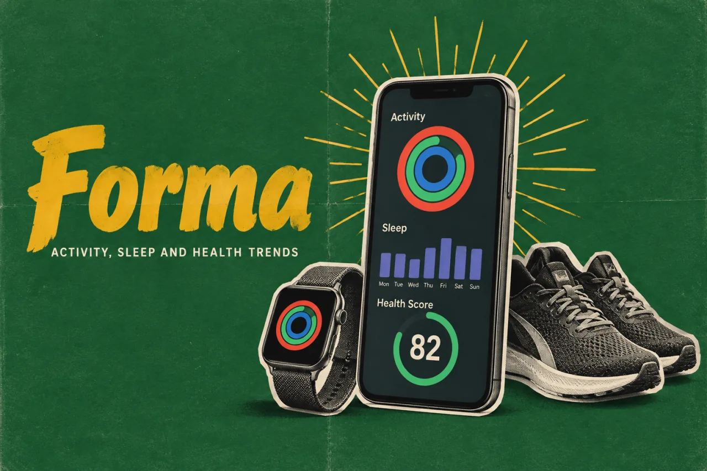
In short
- The problem: a number from a watch can be fresh, days old, missing or a formula's guess. Most dashboards show all four the same way.
- What I built: a native Android app with five main screens and 44 measurement histories. Every reading keeps its time, its source and its kind beside it.
- The key idea: a score should open up to show what fed it, and a missing input should stay missing instead of turning into a zero.
- Where it stands: version 1.5.1, installed from GitHub. It is tested on emulators with sample data. The real watch-to-phone sync still needs a check on the device, and I have no usage numbers.
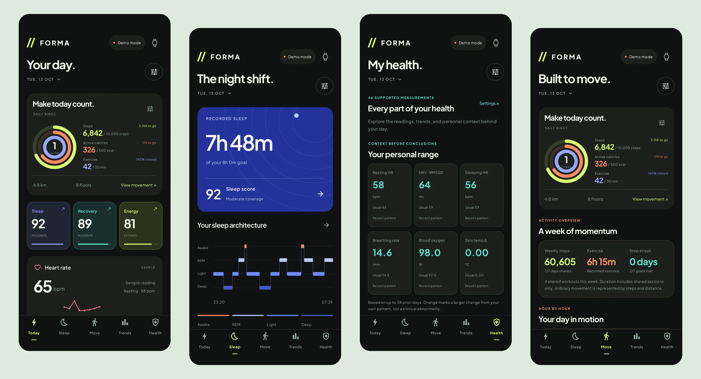
01 Why I built it
A watch number can be fresh, old, missing or a guess
A smartwatch measures a lot: steps, heart rate, sleep, blood oxygen and more. On a Galaxy watch, those readings go to Samsung Health on the phone. Samsung Health then decides which ones to share with other apps, and when.
So the number an app shows can mean very different things. It might be a reading from two minutes ago. It might be a weight logged last week. It might be a zero that only means nothing was shared. Or it might be a score worked out by a formula. On a typical dashboard these all look alike.
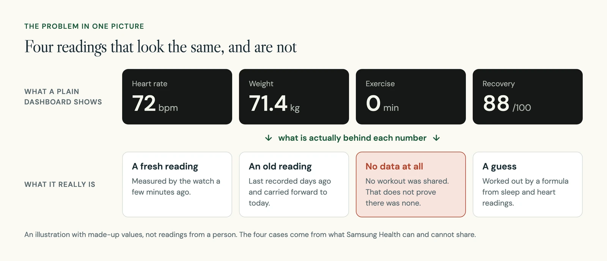
I wanted an app that reads those records and is honest about each one. It should say how old a reading is, where it came from, and when a number is an estimate rather than a measurement.
02 How it works
Forma only reads what Samsung Health chooses to share
Health Connect is Android's shared store for health records. Samsung Health publishes into it, and the person grants Forma each type of record one at a time. Forma works with all of them granted, some of them, or none.
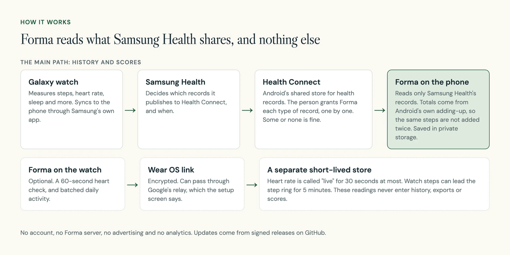
Until records arrive, the app opens on sample data with a "Demo mode" badge, so there is something to explore without handing anything over. The app has five places in the bottom bar and four rows in settings.
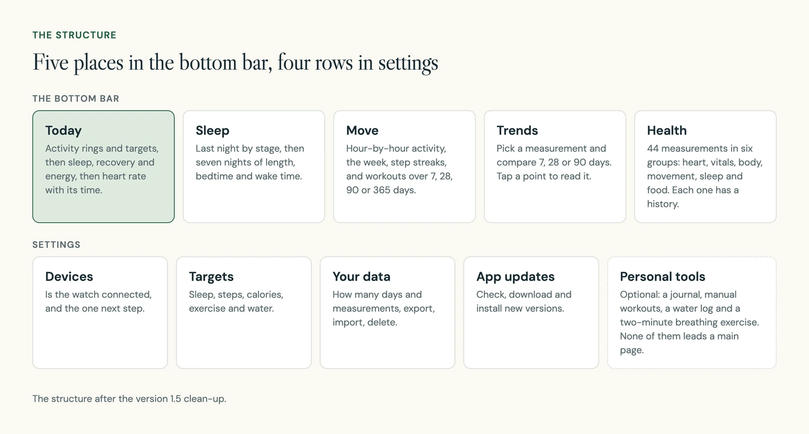
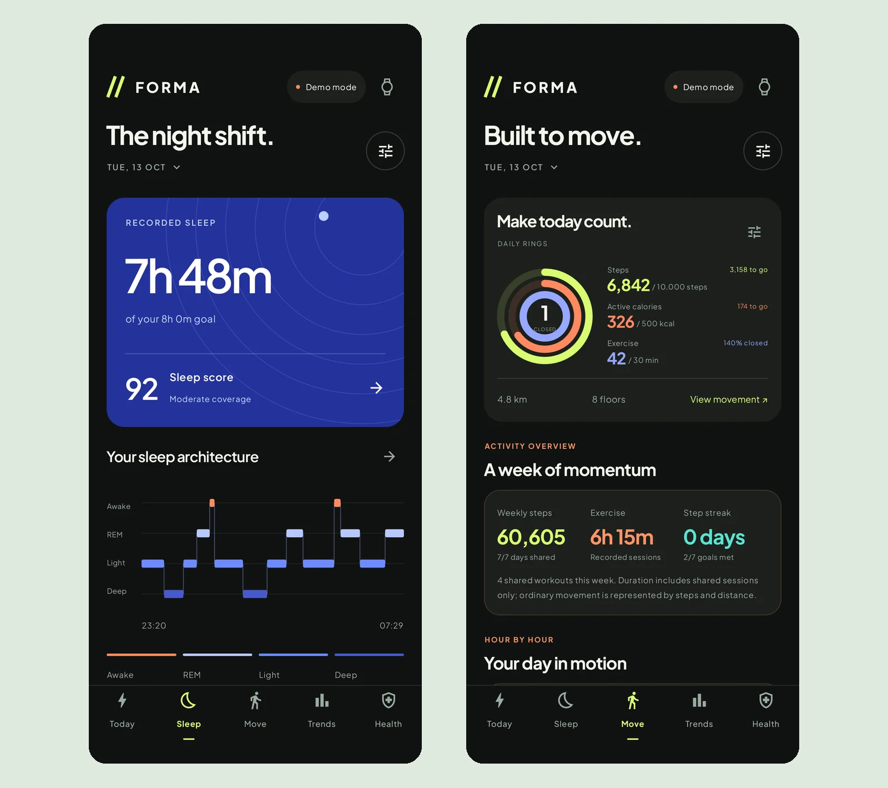
03 Three versions
Three looks in one day, each with fewer slogans
I redesigned the app twice on the first day, and saved screens of each version. Together they are the clearest record I have of how the design changed.
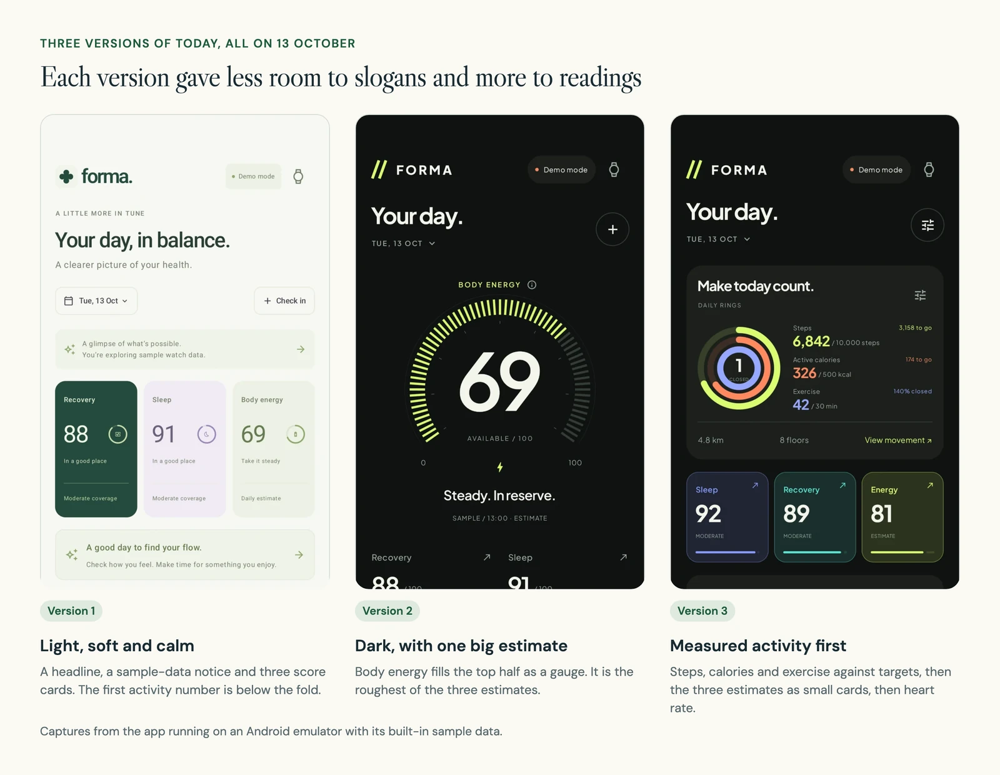
Version 1 was light and calm, with lines like "A good day to find your flow". I kept no written notes on why I moved to version 2, so I will only describe it. It went dark, and made body energy, a rough estimate, the biggest thing on the screen.
Version 3 turned that around. Measured activity went to the top: steps, calories and exercise against targets. The three estimates became small cards below. My design notes for version 3 say no decorative picture should take space from the measurements.
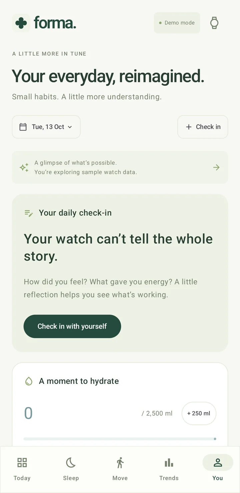
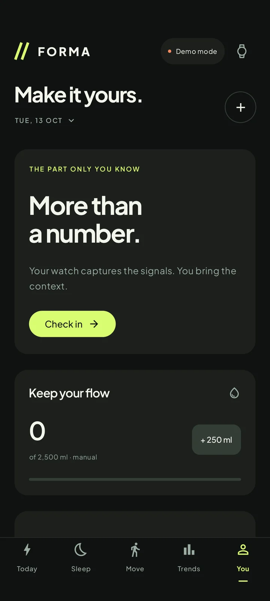

04 Decision 1
Every reading carries its time and its source
What you see: a badge in the header says where the data comes from. Each ring has a target and the amount still to go. The heart rate card says what kind of reading it is.
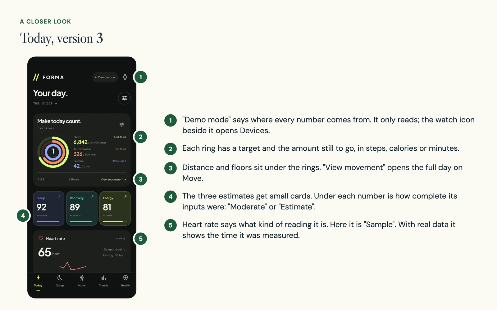
In the build: Forma keeps two times for every reading. One is when the watch took it. The other is when Forma last checked. A fresh check never makes an old reading look new.
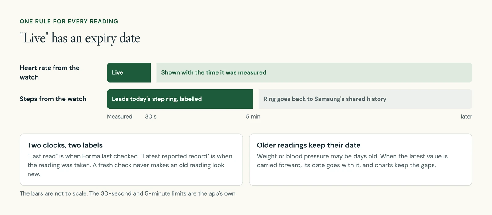
Totals such as steps use Android's own adding-up and only Samsung Health's records, so the same steps are not counted twice. When a resting heart rate is not shared, Forma can show a heart rate from sleep instead. It needs at least 12 minutes of readings, spread across at least half the night, and it is labelled "Sleeping heart rate", never "resting".
05 Decision 2
A score opens to show what fed it
What you see: tap sleep, recovery or energy and a sheet opens. The score comes first, then one row for each input that fed it. The rule and the full working sit underneath, folded away.
The idea was there from the start. Version 1 had a "See the calculation" link under recovery, and version 2 listed what was "Behind your readiness".
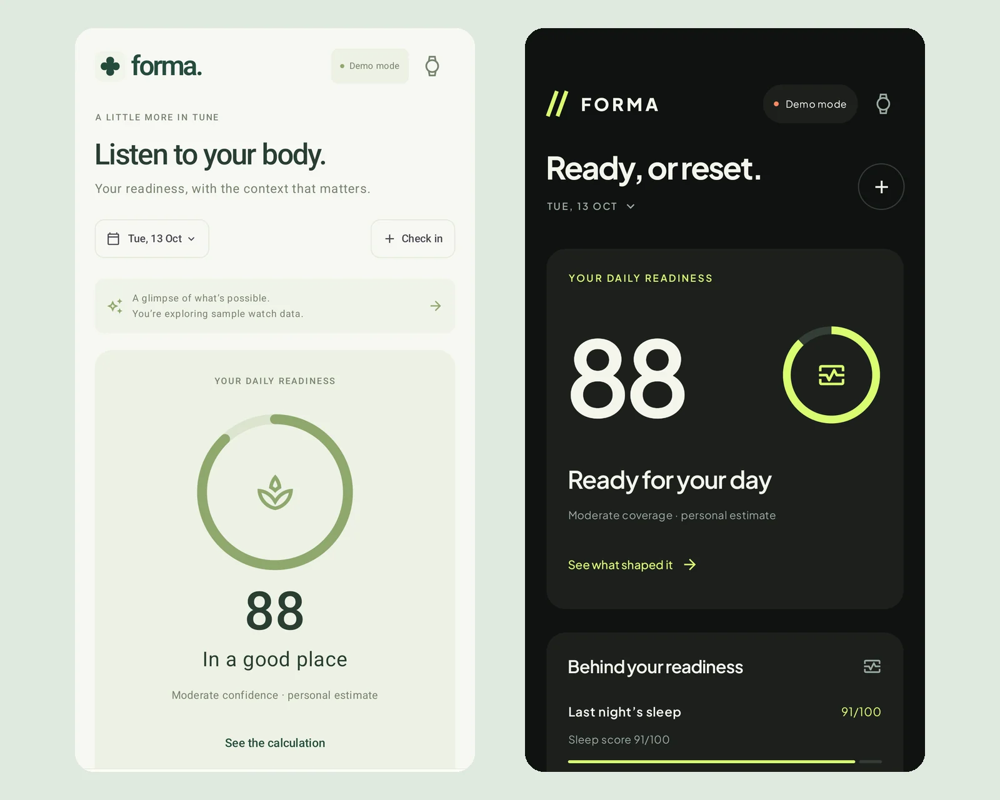
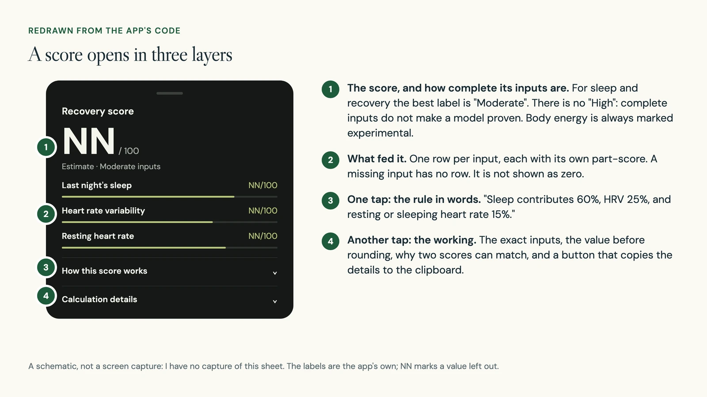
In the build: an input that is not available is left out, not counted as zero. Its weight is shared among the inputs that are there. If there is no recorded sleep, there is no recovery score at all.
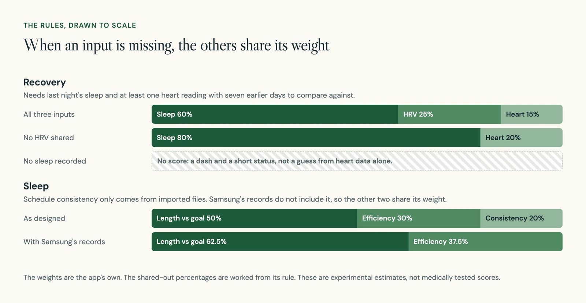
One problem showed me the sheet needed more. Sleep, recovery and energy share inputs and round to whole numbers, so all three could show the same value. That looked like a bug. The sheet now explains why the numbers match, shows the value before rounding, and can copy its working to the clipboard.
06 Decision 3
Each reading is compared with your own usual, not with a chart of norms
What you see: each vital sits beside your usual value, with a seven-day line and the change, such as "−3 vs usual".
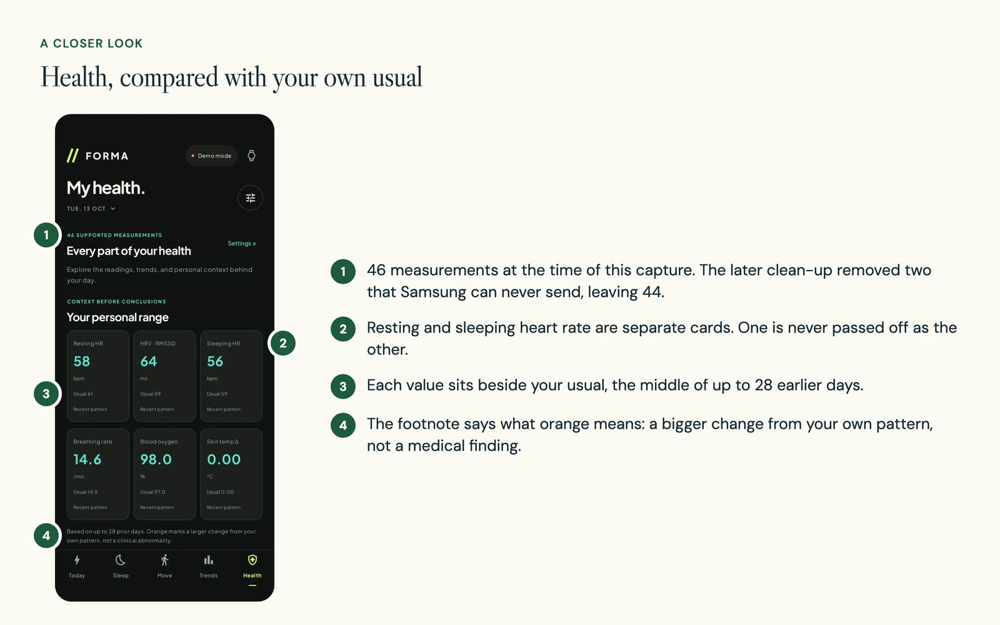
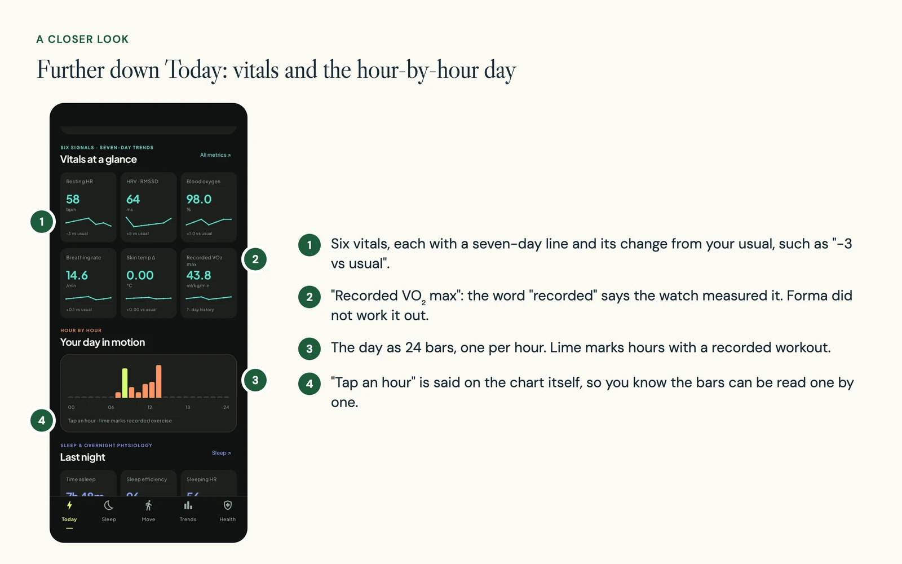
In the build: "usual" is the middle value of up to 28 earlier days. It needs at least seven days before it shows. Heart rate variability (HRV, the small changes in time between heartbeats) is compared on a log scale. So that small day-to-day noise does not look like a big change, the expected variation never drops below 1 breath a minute for breathing, 1 point for blood oxygen and 0.15°C for skin temperature.
07 Decision 4
Connecting a watch and looking after your data are two jobs
What you see: settings has four rows. Devices shows whether the watch is connected and one next step. Your data holds the counts, export, import and delete.
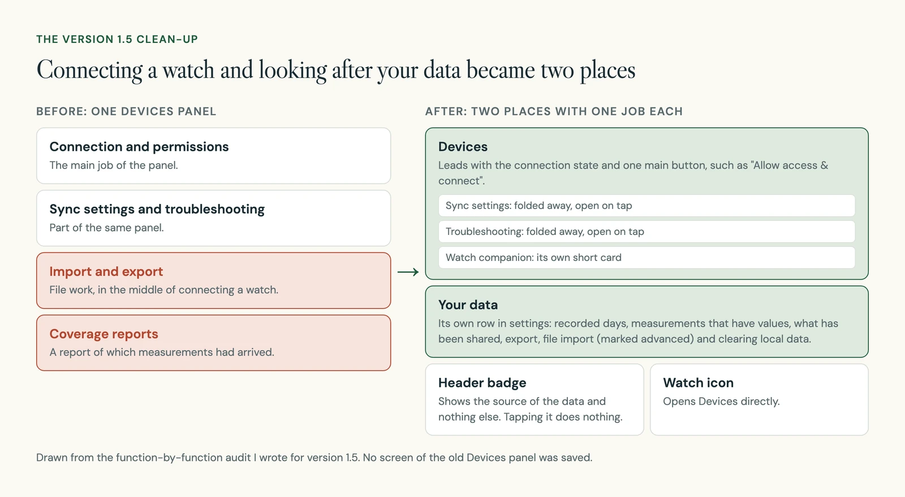
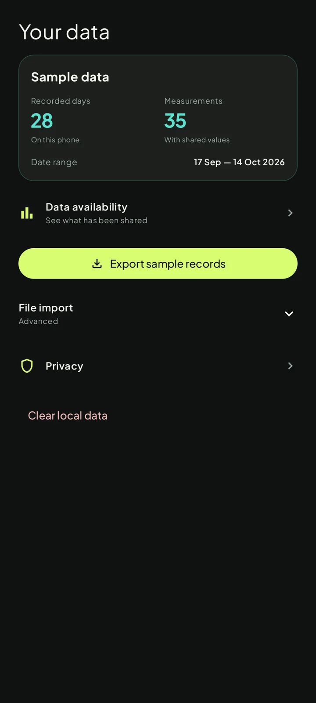
In the build: for version 1.5 I audited the app function by function. I checked whether each piece could be reached and whether it did real work, and wrote down how each one was verified.
- 11
- unused interface parts deleted. Nothing in the app could reach them
- 2
- unused inputs removed: a name and a bedtime that no feature read
- 46 → 44
- measurements, dropping two that Samsung's connection can never send
- 4
- main settings rows: Devices, Targets, Your data, App updates
The audit also found real bugs. Export could report success when nothing had been written. File reading and writing ran on the thread that draws the screen. Trends showed the wrong number of decimals. All three are fixed.
08 The build
Two days of commits, with checks before every release
Forma is a native Android app. Every screen, chart and ring is drawn with Jetpack Compose; there is no web page inside it. Updates come from GitHub, not from an app store.
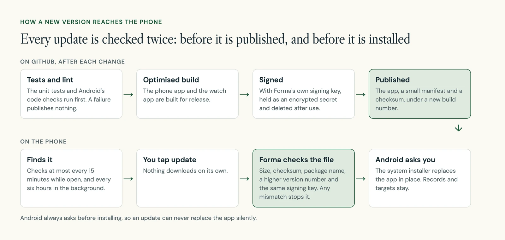
| Part | What I used |
|---|---|
| App | Kotlin, Jetpack Compose, Material 3 |
| Health records | Health Connect, read only from Samsung Health |
| Background refresh | WorkManager, optional, about every 15 minutes |
| Watch app | Wear OS, Health Services for the 60-second heart check, and the encrypted Data Layer |
| Charts | Drawn by hand on the native canvas |
| Releases | GitHub Actions: tests, lint, signed builds, published manifests |
- 12
- commits over 13 and 14 October 2026, one author
- 55
- unit checks passing at the last recorded run
- 39
- checks of real screens on an Android 14 emulator
- 4.2 MB
- size of the phone app
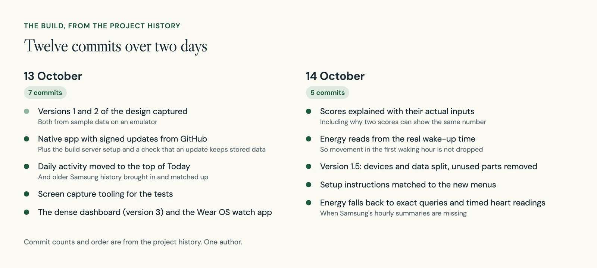
The hardest problems were in reading the data, not in drawing it.
| Area | What went wrong, and what I changed |
|---|---|
| Energy after waking | Energy dropped the whole clock hour in which you woke, so early movement went missing. It now starts at the real wake-up time. If Samsung's hourly summaries are missing, it asks for exact times instead, and six new tests cover those cases. |
| Changes during a read | A record could change while Forma was reading. Forma now notes where it started before reading and saves that point only after the import finishes, so nothing is skipped. |
| Moving to a new signing key | The first preview was signed with a different key. I checked that installing the new version kept every stored record, setting and the app's identity. |
There is no advertising and no analytics. Health records stay in the app's private storage and are left out of phone backups. An export leaves out personal notes.
09 Where it stands
Installed from GitHub, not yet proven on the real watch
Forma is at version 1.5.1. It installs from GitHub releases and updates itself after you confirm. It is not on Google Play, and I have no usage numbers to share.
I use Forma every day myself.
- The tests run on emulators, with sample data and made-up Health Connect responses. The full path from the watch through Samsung Health to Forma still needs a check on the real phone and watch.
- How the watch installs its own updates still needs a check on a physical Galaxy watch.
- The scores are experimental. Nothing about them has been checked against medical measurements.
- Screens captured after the 1.5 clean-up are incomplete. Only Your data is on this page in its final form.
10 What is next
Check it on the device, then with people
- Run the device checks: granted, refused and partial permissions on a Samsung phone and watch, a late sync and a corrected record.
- Capture the final Today, Health, Devices and score sheet screens.
- Ask a few people to sort readings into fresh, old, missing and estimated, and to explain what a recovery score does and does not mean.
11 What I learned
A missing number is information too
The most useful rule was the simplest: missing stays missing. It shaped the rings, the scores, the charts with gaps and the labels. Every place that broke it would have shown a confident number with nothing behind it.
The three looks taught me to ask what fills the top of the screen. In two of the three versions it was not a measurement at all. The audit taught me that unused parts pile up fast, even in two days: there were eleven in this app.
Sail your ship. Coordinate the fleet.